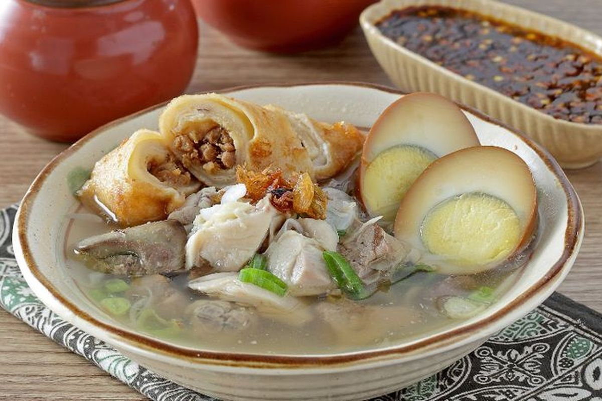

Timlo adalah hidangan sup bening khas Surakarta yang juga lekat dengan keseharian masyarakat Karanganyar. Kuahnya yang gurih dan ringan berpadu dengan sosis Solo (telur dadar gulung berisi daging cincang), telur pindang, ati ampela, serta suwiran ayam yang disiram di atas nasi hangat.
Hidangan yang Merayakan Kesederhanaan
Berbeda dengan banyak masakan Jawa yang manis dan kental rempah, Timlo justru tampil dengan kuah bening yang ringan namun kaya rasa. Hidangan ini sering disajikan dalam acara keluarga maupun sebagai menu sarapan, menjadikannya bagian dari ritme keseharian warga Karanganyar dan sekitarnya.
"Semangkuk Timlo bukan sekadar sarapan, tapi pengingat akan dapur ibu di pagi hari."
Fakta Menarik
- Nama "Timlo" diduga berasal dari pengaruh kuliner Tionghoa-Jawa di Karesidenan Surakarta
- Komponen khasnya: sosis Solo, telur pindang, ati ampela, dan suwiran ayam
- Disajikan dengan kuah bening yang ringan, berbeda dari sup Jawa pada umumnya
- Banyak ditemukan di warung-warung legendaris yang telah berdiri puluhan tahun

Mengapa Penting?
Timlo adalah jejak akulturasi budaya yang hidup di atas piring. Melestarikan resep dan cara penyajiannya berarti menjaga sepenggal sejarah perjumpaan budaya yang membentuk identitas kuliner Karanganyar hari ini.